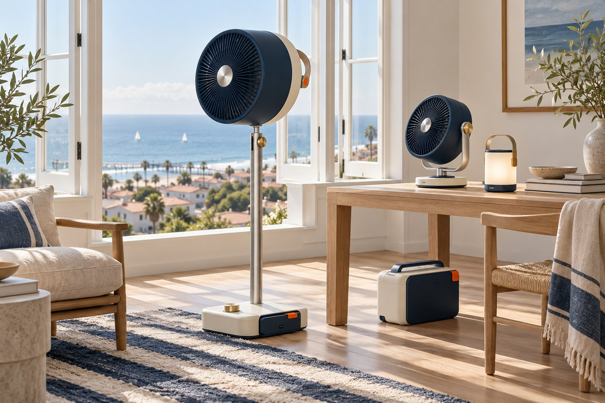
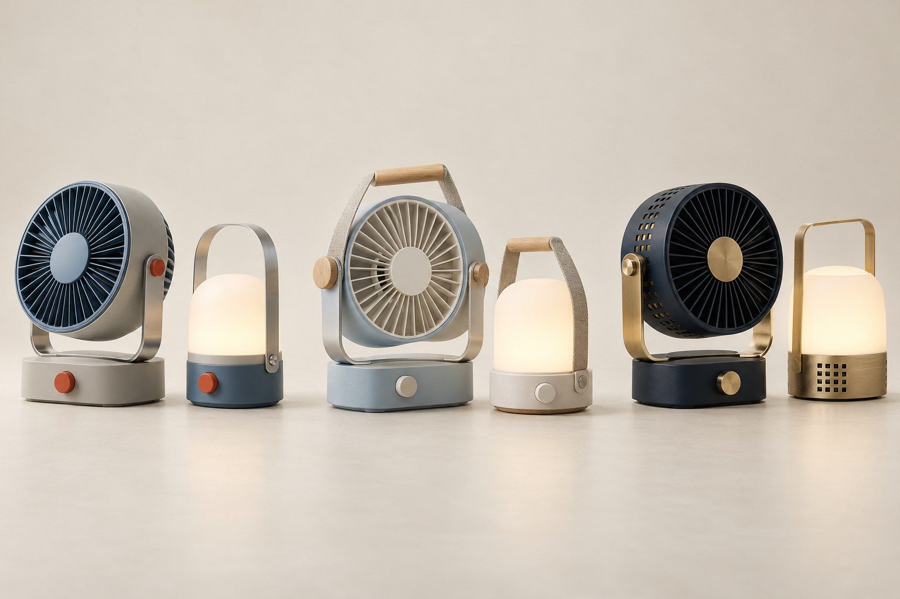

ESLW / ARCHITECTURE 02-AENERGY, WITH A PLAN.
THE PACIFIC UTILITY COLLECTION
A little more
outside.
Every day.
Good light. Moving air. Cold drinks.
A useful little world, from the living room
to the edge of the Pacific.
FIELD GUIDE 002
CONCEIVED IN EL SEGUNDO
CONCEIVED IN EL SEGUNDO

FOR THELONG WAY
HOME.ESLW · PACIFIC UTILITY
HOME.ESLW · PACIFIC UTILITY
The public build program is open. Product briefs, local manufacturing, tasks & feedback.Come build with us ↗
☼ SOLAR BY DAY⌁ AIR IN MOTION↗ MADE TO MOVE⊕ DESIGNED TO REPAIR
THE IDEA / USEFUL BY NATURE
Camping equipment.
With a home address.
Keep the good things close. A familiar handle, a proper dial, a battery that moves with you. Objects with enough character for your apartment and enough backbone for a day on the sand.
Pacific Utility brings the honesty of a field instrument to everyday comfort. Sailing-club blues, Japanese serviceability, and the easy generosity of an El Segundo afternoon.
Independent design study · imagined products, proposed specifications and AI-generated visualizations. No products are offered for sale.
01 / THE EQUIPMENT REGISTER
Six good things.
One well-packed day.
Carry less. Use it more.
Choose a setting to explore the kit.
FIELD NOTES
Shared colors. Replaceable wear parts. Controls you can find without looking. Each concept is a starting brief for prototyping—not a tested performance claim.

SAME OBJECTS. DIFFERENT HORIZON.
The beach comes
home with you.
The pedestal folds down. The fan docks at your desk. The lantern lands beside a book. The battery becomes a quiet charging station.
Build for the hours between adventures, too.
Explore the coordinated home ↗02 / THE COMMON SYSTEM
Sun in.
Good living out.
A proposed DC-first architecture.
One large base. Small removable packs.
A sensible place for every cable.
A solar panel with a second job.
Sunboard folds into a kickstand, privacy screen or camp-table frame. A removable tray provides the table surface; keep it off the active cells when charging. Add a rail kit for a balcony installation.
Power where the work happens.
Harbor Base supplies the refrigerator and recharges portable fan and light packs. Keyed, protected connectors and clear remaining-energy readings are part of the brief. Hot swapping and compatibility need validation.
Durability is a service plan.
Screw-fastened shells, replaceable bumpers, a removable fan grille, washable straps and a documented parts list. Salt exposure, ingress, drops and battery safety must be tested before ratings are claimed.
THE NICE LITTLE EXTRAS
01 / Solar tray02 / Balcony rail kit03 / Sailcloth carry roll04 / Sand feet05 / Ice-pack divider06 / Lantern shade
FIELD EXPERIMENT / CATCH THE BREEZE
What if the wind
did some of the work?
A removable sailcloth scoop turns toward the breeze and guides air into a tent vestibule or through an open window. The powered fan takes over when nature takes a break.
A passive airflow concept, not a generator or air conditioner. Wind direction, noise, stability and pressure losses need physical testing. No cooling-temperature claim.
WIND SCOOP / DETACHABLE SAILCLOTH / STUDY 02-W
03 / A QUIET KIND OF INTELLIGENCE
One feeling.
The whole little fleet.
Try a local scene preview.
The physical dial always has a say.
LOCAL SCENE PREVIEW BEACH AFTERNOON
Air / Dock Fan65%Turn the virtual dial
Light / Buoy20%Warm white · 2700 K concept
Cooler priority on. Fan at 65%. Lantern ready for dusk.
Simulation only · no devices connected
Bluetooth nearby.
Proposed local pairing for one person and one kit. Physical buttons remain usable offline. Pairing, range and security require hardware validation.
A home bridge, optionally.
A future bridge could coordinate fans, lamps and energy telemetry. Matter interoperability is a separate engineering and certification project.
AI that asks.
“Keep a reserve for the cooler.” An assistant proposes a plan and explains its tradeoffs. You approve it. No always-on microphone or autonomous control in this study.
04 / PACK ENOUGH DAY
A little energy
arithmetic.
Try the equipment together. See what fits inside one illustrated battery budget.
Illustrative assumptions, not product specifications. Temperature, compressor cycling, shading, charging limits and conversion losses change actual results.
THE ILLUSTRATED DAY118 Wh
remaining after your outing
- Usable battery · 90%
- 461 Wh
- Planned energy use
- 343 Wh
- Illustrated solar · 65%
- 0 Wh
Above the 20% usable-energy reserve.
Budget = 90% of nominal capacity + solar − loads. Reserve = 20% of usable battery. This simplified balance does not model charge timing or overflow.05 / STYLE GUIDE NO. 02
Properly nautical.
Entirely useful.
PRIMARY SIGNATURE002—P
EL SEGUNDOLIGHT WORKS
PACIFIC UTILITY
MADE FOR THE LONG WAY HOME.THE CREATIVE BRIEF
A 1999 Minneapolis
agency mood board.
Imagine a Leo Burnett-style print campaign: a useful human truth, a warm product photograph, one memorable line. Add the navy-and-cream sailing language associated with Ralph Lauren, then take it down to the beach.
These are creative references, not a historical attribution, commissioned agency work or brand collaboration.
01 Lead with a useful object.02 Give everything breathing room.03 Let one bright control do the talking.04 Make care and repair part of the identity.
The coastal palette
Click a swatch to copy its hex codeTYPE / A LITTLE EDITORIAL AUTHORITY
Useful things.
Beautiful days.
Beautiful days.
Georgia regular & italic for the story. Generous scale, short lines, no ornamental effects.
HARBOR BASE / 512 WH
Arial / Helvetica for navigation and labels. Monospace for measurements and serials. A calm hierarchy, legible at arm’s length.
FORM / BUILT TO BE HANDLED
- ShellMatte navy or warm ivory
- StructureBrushed, serviceable aluminum
- TouchTextured dials, positive detents
- CarryReplaceable woven straps
- WearRemovable corner protection
- SignatureA small serial plate, never a billboard
Photography: real-scale settings, honest shadows, useful arrangements. Show the wire, the fastener and the handhold. Renderings remain labeled.
CAMPAIGN LINE / 02
“Take the good room
with you.”
EL SEGUNDO LIGHT WORKS ↗
06 / THE DESIGN OFFSHOOTS
Three ports.
One point of view.
Special-edition studies.
Same proposed platform.
A different way of living with it.

Independent concept editions. The Ivrea study references Olivetti’s industrial-design tradition; it is not an Olivetti product or authorized collaboration.
FROM EL SEGUNDO, WITH INTENTION.
Make it useful.
Make it last.
Make it a good day.
CONCEPT DIRECTION & SIGNATURE
Michael Hoydich
El Segundo, California
Pacific Utility / October 2026